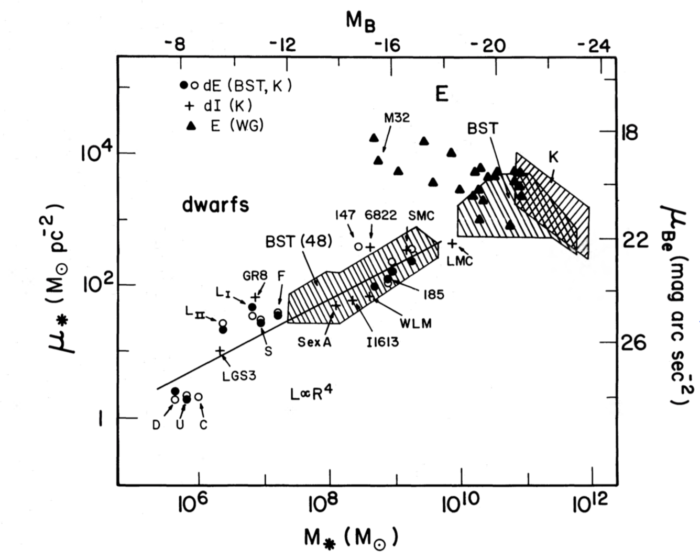
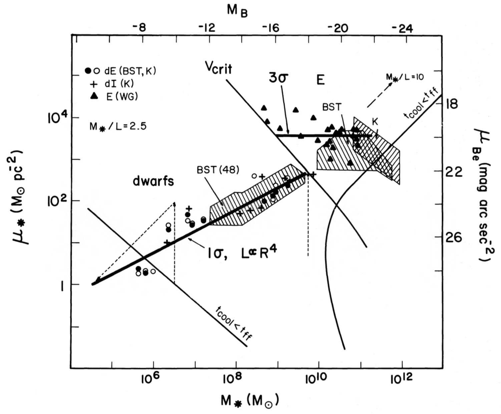

THE ORIGIN OF DWARF GALAXIES, COLD DARK MATTER, AND BIASED GALAXY FORMATION
- INTRODUCTION
Most of the galaxies in the universe are dwarfs, fainter than M_B=-18, and with low surface brightness and metallicity.
Correlations have been found between their measured properties, such as absolute magnitudes, surface brightness, characteristic radii, metallicities, and preliminary measurements of velocity dispersions.
Based on these correlations, it has been inferred that there are two distinct classes of ellipticals: “normal” ellipticals (E), and dwarf ellipticals (dE).
There are also dwarf Irregulars and dwarf Spirals (dI), and the correlations for these ones resemble the correlations for dE.
IDEA: low surface brightness and low metallicities of dE’s and dI’s are a result of substantial mass loss at early stages of evolution. Possible mechanism: global galactic winds driven by supernovae from the first generation of stars (removing large fraction of the gas).
HOWEVER, these models fail to explain the observed correlations.
The authors aim at finding the “simplest” (analytic) model to explain this, where they allow galaxies to form and eject gas in dark halos.
Their model for the formation of dE’s supports a CDM (cold dark matter) scenario.
(“Cold” refers the velocities of the particles, which are
not relativistic, “Dark” because it interacts very weakly with ordinary matter
and EM-radiation).
In the CDM scenario, structures grow hierarchically
(bottom-up), with small objects collapsing under their self-gravity first and
merging in a continuous hierarchy to form larger and more massive objects.
In HDM scenario, top-down.
Super-clusters and clusters form first and then they fragment to form the
smaller structures.
Nonetheless, CDM
scenario has some difficulties explaining the large-scale structure of the
universe.
Possible scenario: biasing the
galaxies to form preferentially in high-density regions. This scenario could
also solve the cosmological puzzle that all the dynamical evidence of galaxy
distribution and their peculiar velocities indicate an open universe, whilst
the theoretical arguments suggest that the universe should be close.
However, there are no physical basis for such bias. Authors try to give simple explanation to it.
Authors find a selective bias: the bright galaxies are affected, but dwarfs are expected to be good tracers of the real mass distribution in the universe.
- OBSERVED RELATIONS
The relations derived from observations are: luminosity to the radius (or surface brightness), metallicity, and velocity dispersion.
o Luminosity-radius
Fig 1, shows a compilation of data on the structural properties of the galaxies observed, plotting mean blue surface brightness within the effective radius vs. blue magnitude.
The data shows a clear distinction between two classes of galaxies.
The dwarfs obey a correlation , with , where R is the effective radius (or the core radius). However,
for “normal” ellipticals, r appears to be < 2.
For E’s, with increasing surface brightness within the effective
radius, the luminosity decreases.
Anywho, all authors agree that the L-R correlation for dwarfs is
a power-law, and for E’s is very different.
o
Luminosity-metallicity
Fig 2.
Dwarfs show a clear correlation over 8 mag, a power-law
correlation:  , with .
, with .
And then again, there seems to be a discontinuity between dwarfs
and normal ellipticals, although is not certain if it’s correct or not, since
the methods used for measuring Z could have been different. (E’s are not shown in this plot, just their locus)
There are indications that the luminosity-metallicity relation
of dl’s is similar to that of the dE’s.
o
Luminosity-velocity
dispersion
Fig 3.
For “normal” E’s, the central velocity dispersion is believed to
follow the relation , with . (Faber-Jackson relation). (although,
E’s are not shown in this plot, just their locus)
However, the velocity dispersion measurements for dwarf’s
fainter than () are poorly known, and
the available ones are not very reliable. Therefore, those can only be taken as
indicatives, in the order of 5-10 km/s.
o Mass-to-light ratio
Again, measurements are very preliminary.
The results indicate large values of M/L ratios, up to 100 for the faintest dE’s, and values in the range 2-10 for the brightest dE’s.
Studies performed by other authors suggest that dark matter is distributed more uniformly, perhaps around dwarfs as well, as opposed to being clustered in the halos of large galaxies.
The preliminary results of Dekel and Silk are consistent with massive dark halos that may, at least marginally, dominate the gravitational potential.
The presence of these dark halos is necessary to understand the origin of the observed relations of structure and metallicity with luminosity.
- MODEL RELATIONS
Using simple models to relate the scaling parameters: r, z and v.
Uniform gas undergoing star formation
Initial mass
Sphere of radius
Mass driven out
of the system
Mass left behind
in the stars
So basically,
It is expected
that
And metallicity
o The case of no-gas-loss
Then , and final radius
If the system is self-gravitating, then the final mass
Virial theorem:
This model suggests constant metallicity, while the graph for metallicity clearly shows an increase of Z with luminosity.
the fact that the metallicity of dE’s does increase with luminosity, contrary to what is predicted by the no-gas-loss model, may indicate that mergers have stimulated star formation.
the simple no-gas-loss relations are clearly in conflict with those observed for the dwarfs.
Something seems to be very different about dwarfs, and it suggests that their properties require removal of a substantial amount of mass in gas at an early stage.
o Gas removal in a self-gravitating cloud
Substantial removal of the protogalactic gas. The relations for structure and velocity both before and after the removal:
Metallicity
Assume the gas loss is driven by supernovae.
Due to the gas loss, the gravitational potential decreases, and therefore, the stellar system “swells”.
If the gas loss is slow, then is the case of adiabatic removal, BUT if the system loses its gas fast, then the whole system becomes unbound if it loses more than half of its mass.
à Following derivations, the model ends up with only ONE free parameter (r).
Then, comparing with the observation constraints, where and .
BUT, for any , the resulting value for z is , but from the observations we see that , and hence, the model is not appropriate for explaining the
correlations observed for dE’s.
o Gas loss in a dominant halo
Case: the gas is embedded in a dark halo.
After forming stars, the mass in gas is proportional to the dark mass inside the initial radius ().
For a system with DOMINANT dark halo, the gas loss would not affect the structure of the system (nor R or V).
à Following derivations, the model ends up with only ONE free parameter (r), with NO NEED to define whether the gas removal occurred adiabatically or not.
Using the observational constraints, r=4, the results for z is z=2.7, which is in well agreement with the observations of dE’s.
Interesting result from this model:
The halo structure , and its corresponding index turns out to be the
predicted slope of the CDM spectrum for the mass ranges of dE’s.
Also, the model suggests that as one goes to the fainter limit of dwarfs (i.e. decreasing luminosity), the M/L ratio increases with a slow decrease in the velocity dispersion.
- CONDITIONS FOR GAS REMOVAL
Investigation of the critical conditions, in terms of gas density (n) and virial velocity (V), so that supernova driven gas removal occurs at early stages while star formation occurs.
Also, trying to find the difference between which protogalaxies become normal E’s and which ones dE’s.
Energy condition: (the energy that has
been pumped into the gas is enough to expel it from the protogalaxy)
They follow some mathematical derivations for how the SNR evolves in time, and how it transfers the energy. Basically, it goes through two phases, one adiabatic and another one radiative.
They derive the energy input from ONE SNR, taking into account the evolution phases, and then they derive the cumulative energy input from several SNR, i.e. the energy pumped into the gas (equation 44).
They also calculate the critical velocity below which removal is possible. They find that it is VERY WEAKLY dependent on the mass density (n), eq 54.
The result is illustrated in Fig 5, the n-V diagram.
Above the curve , gas can contract and form stars
The free-fall time is the characteristic time
that would take a body to collapse under its own gravitational attraction, if
no other forces existed to oppose the collapse.
The vertical line for  , divides the galaxy formation zone in two.
, divides the galaxy formation zone in two.
Protogalaxies with velocities larger than  , would turn most of its original gas into stars.
, would turn most of its original gas into stars.
Protogalaxies with velocities lower than  , would drive most of the protogalactic gas out due to supernova
driven winds from the first stars.
, would drive most of the protogalactic gas out due to supernova
driven winds from the first stars.
The line corresponds to the peak at the initial density
fluctuation field of CDM, and the vertical dashed line intersecting the line shows the _largest_
galaxy that can form out of a typical, , peak.
So, this shows that the majority are going to lie in the dwarfs
category, resulting in the dwarfs being the most common galaxies in the
universe, and the “normal” E’s actually being (statistically) the “rare” case,
and arising from the rarer peaks of of the density
perturbations.
Basically, this theoretical model predicts two types of galaxies:
The “normal” E’s, confined to the region with larger virial
velocities, and tend to be massive.
And the diffuse dwarfs, with smaller velocities and lower
densities, and lower mass in stars.
-
COMPARISON WITH
OBSERVATIONS
The
n-V diagram is converted into surface brightness-luminosity diagram, in order
to compare it with the observations.
The
relations between theoretical and observational values are determined by
assuming a particular ratio (the same value as
in the cores of globular clusters) and identifying with the effective
radius.
The
agreement between theory and observations is almost TOO perfect.
They
say that the fact that the slope for the correlation in dwarfs matches so well
the observations is to be expected since it was used as a constrain when
building the model.
However,
that the normalization resulted so perfect is surprising, since they kept the
model as simple as possible.
The
fact that the line indicating the critical velocity actually divides the two
loci for E’s and dwarfs it indicates that an efficient burst of star formation,
on a free-fall time scale, is consistent with the data, however that it lies
EXACTLY in the middle is “luck”, since the model is so simple.
The
theoretical line that emerges from 3sigma CDM perturbations is also in general
agreement with the observed E’s, although the slight decrease of surface
brightness with luminosity is not predicted by the simple model.
For
the predicted scaling relation between metallicity and luminosity for the dwarfs,
they do not attempt to ACTUALLY normalize the theoretical values since they
don’t really know an accord=ate estimate for the amount of metals produced per
unit . So, they use an arbitrary normalization to match the
observations.
The
important prediction of the model is the slope L∝Z^2.7, which is consistent with the data.
This slope is a direct result of the presence of halos of CDM.
For the velocity-luminosity correlation, the preliminary results for the faint dE’s agree with the model, however there are some outliers. But we must remember that the measured velocities are only indicative, since the data is not well constrained.
 
- ON DWARF IRREGULARS
There is a debate on whether the dI’s are remnants of dE’s that have lost their gas (since dI’s still have _some_ gas mass).
However, the authors do not focus on this, but rather on the observations, which show that both types of diffuse dwarfs seem to follow similar radius- luminosity-metallicity relations.
The authors suggest that both dI’s and dE’s have lost most of their mass in winds after the first burst of star formation, however, the dI’s managed to keep a little bit of their mass (maybe their dark halo is larger and some gas that has been driven out of the core can still be bounded by the halo, and can fall again into the system… OR in the case of galaxy clusters, the halos can be tidally truncated and complete gas would be easier there, and dI’s could turn into dE’s… OR, ram pressure can also strip away the gas away from dI’s and turn them into dE’s).
Another possibility for why dI’s form, may be that the critical velocity changes before the gas loss is complete, so a galaxy that is initially unstable to gas loss may become stable and retain some gas after the metallicity has built up.
Basically, they do not have a solid theory for the relationship between dI’s and dE’s, but the data is highly suggestive for a substantial gas loss at early stages.
- BIASED GALAXY FORMATION
So, they recall the finding on how the brighter E’s form from rare peaks in the initial density fluctuation field of CDM ()
BUT, the diffuse dwarfs can originate from any density peak.
Note, however, that although CDM agrees very well with this model, is not thd only one, basically any bottom-up model would work.
So, the critical condition separating E’s from dwarfs, is the critical velocity dispersion on the order of 100 km/s. This gives rise to a biased galaxy formation….
The give some explanation on how the spatial distribution of rare peaks is an enhanced- contrast version of the underlying large-scale density perturbations, while the distribution of common peaks is expected to be representative of the real background perturbations, and the RESULT is
that the spatial distribution of bright galaxies does not trace the underlying mass distribution ; they are preferentially formed in clusters and superclusters and tend to avoid low-density regions, creating apparent “voids”, while the dwarfs should be much better mass tracers on large scales, since they would be clustered in clusters and superclusters but would tend to be less concentrated toward their centers relative to the bright galaxies and the number density contrast of dwarfs in clusters and in “ voids ” would be similar to the real density contrast of the matter.
However, observing dE’s is very difficult, maybe dI’s are less difficult since they still have a little bit of gas mass.
- CONCLUSIONS
Dwarfs are expected to have formed in dark halos that initially extended to radii ten times larger than the presently observed radii.
The required presence of halos in dwarfs, by itself, provides a strong argument against dark matter of the “ hot ” type, namely neutrinos.
The dwarf irregulars are also expected to have dark halos, perhaps more extended than those around the dE’s.